Fig 1. ERITREAN T-72 TANK WITH LOOTED HOME GOODS IN A NORTH ETHIOPIAN TOWN IN TIGRAY PROVINCE c. MARCH OF 2021

Four years ago, the worst war in the African continent since Second Congo came to an unsatisfying conclusion. The war which resulted in the deaths of half a million in only two years and nearly led to the destruction of the Ethiopian state
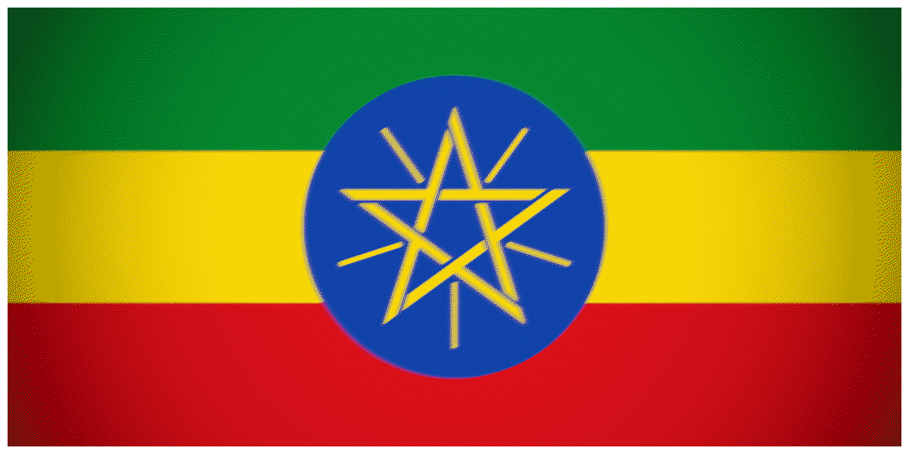
and the Tigray region resulted in neither. Instead, the can was kicked down the road with the Pretoria agreement, a piece of paper that was left to rot extremely quickly. Today, the region is on the precipice of another calamity, one that would absorb multiple nations and maybe even upend the geopolitical balance in the region.Ethiopia is and always has been a multi ethnic society, with power centered around the Amhara, to the detriment of everyone else. When the Amharic Kingdom fell, the majority of the new DERG regime was also Amharic. The coalition that overthrew the communist regime was the Ethiopian People's Revolutionary Democratic Front, with the Tigray People’s Liberation Front (TPLF) at top. It was a sheer miracle that the state did not collapse into inter-ethnic fighting. For the first time, most of Ethiopia would finally rest easy. During the 2000s and 2010s, Ethiopia had some time to grow, even hosting the African Union headquarters. Though this time was also marked with an interstate war between it and newly independent Eritrea
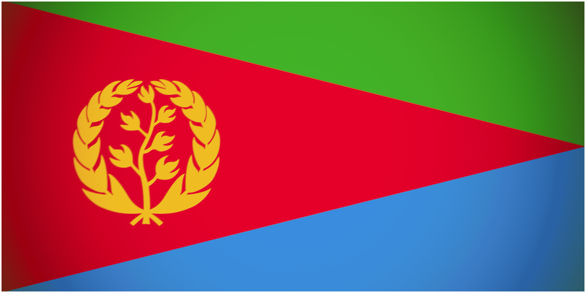
, which would set the stage for poor relations in the future.Fig 1. ETHIOPIAN PRIME MINISTER ABIY AHMED RECEIVES PEACE PRIZE. IN TWO YEARS HE WOULD LEAD HIS COUNTRY INTO A BRUTAL CIVIL WAR
As the 2010s came to a close, the EPDRF would host leadership elections. The election culminated in the victory of Abiy Ahmed, then a new and fresh face. Ahmed worked quickly to create his new Propserity party and moved to centralize the government, uniting the different ethnic parties. All agreed, except one: the TPLF . Instead of uniting with the others, the TPLF , one of the most powerful ethnic factions, stood their ground and consolidated control of Tigray region. In 2020, with the coronavirus pandemic surging forth, the Ethiopian government cancelled scheduled elections. Unfortunately for them, the TPLF decided to go ahead with the elections, angering Abiy Ahmed. A few months later, the Ethiopian National Defense Force (ENDF) entered Tigray , starting the (first) war.
The (first) Tigray war was exceedingly brutal. Both sides committed horrifying sectarian atrocities, killing hundreds to thousands. Both the TPLF and the ENDF came close to ending the other, but neither were totally out of the fight. During the war, Ethiopia was supported by numerous regional and international actors, while Tigray only had the Oromo Liberation Army
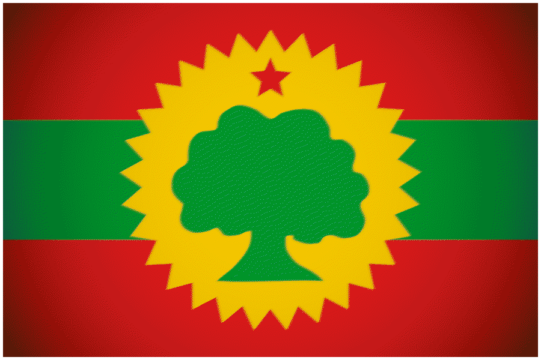
based in Oromo state. The ENDF was given Bayraktar drones by Turkey
Fig 1. ERITREAN T-72 TANK WITH LOOTED HOME GOODS IN A NORTH ETHIOPIAN TOWN IN TIGRAY PROVINCE c. MARCH OF 2021
Since the Tigray war, the implementation of Pretoria and the disarmament of the TPLF has not happened. To the contrary, the TPLF moderates that were in office were routed by the end of April, 2025. In their place, independence hardliners came into power, who immediately began to eye up western Tigray , which had been lost during the 2020-2022 war. On the other hand, Abiy Ahmed has only cemented his dictatorship both domestically and internationally. He has become an instrumental part of the UAE’s axis, facilitating the transfer of equipment and the training of men affiliated with the genocidal RSF 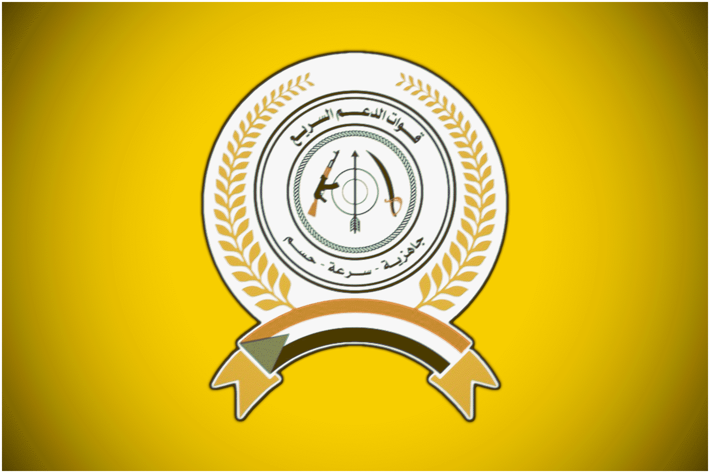 . Since 2023, the ENDF have also had to contend with a worsening insurgency in the Amhara state made up of Fano militants who formerly assisted the ENDF wage war against the TPLF . They have quickly become a major pain and tension point.
. Since 2023, the ENDF have also had to contend with a worsening insurgency in the Amhara state made up of Fano militants who formerly assisted the ENDF wage war against the TPLF . They have quickly become a major pain and tension point.
For the past year, tensions between Tigray and the Ethiopian regime have only escalated. Both parties have clashed and struck enemy positions throughout the months, with the TDF even going as far as to cross the Tekeze. Though every time tensions would peak and troops would flood the border on both sides, the Fano Amharan militia would launch large sweeping offensives, forcing the ENDF to shift gears. In conjunction, relations with the Eritrea ns have once again plummeted. Multiple Ethiopian officials have called for the capture of the port of Assab so the country can once again have a natural coastline and not rely on their neighbors.
Today, the risk of war is higher than at any point since the end of the Tigray war. According to the watchdog Human Rights Watch, the TPLF have started to mobilize and forcibly recruit young men into their ranks. Videos have been leaked from Mekele showing buses filled with young military aged men. Similarly, the ENDF has also mobilized significantly, sending troops and military hardware, such as AFVs, artillery, and MBTs, to the frontline. You do not do this if you are not expecting war, obviously. For them, the mobilization also has the added bonus of making multitasking between counterinsurgency operations in Amhara state and conventional operations against Tigray less burdensome and difficult.
This time though, any future war would see the doubling of possible participants, both in and outside of Ethiopia . On one hand, the Sudanese Armed Forces (SAF  ), the Eritreans , the TPLF , the Fano , and the Oromo Liberation Army , have been rumored to have created a loose coalition with the purpose of defending or attacking Abiy Ahmed's Ethiopia called Tsimdo, Tigrayan for agreement (Paralleling the EPDRF in a way). Farther away, both the Saudis
), the Eritreans , the TPLF , the Fano , and the Oromo Liberation Army , have been rumored to have created a loose coalition with the purpose of defending or attacking Abiy Ahmed's Ethiopia called Tsimdo, Tigrayan for agreement (Paralleling the EPDRF in a way). Farther away, both the Saudis  and the Egyptians
and the Egyptians  have opened up talks and their coffers of war for the SAF
have opened up talks and their coffers of war for the SAF  and the Eritreans . To clear its reputation as a near universal pariah in its surroundings, Israel
and the Eritreans . To clear its reputation as a near universal pariah in its surroundings, Israel  has also made openings in the horn of Africa. Netanyahu has signed deals with not just the UAE and Ethiopia , but also with the nascent separatist state of Somaliland
has also made openings in the horn of Africa. Netanyahu has signed deals with not just the UAE and Ethiopia , but also with the nascent separatist state of Somaliland
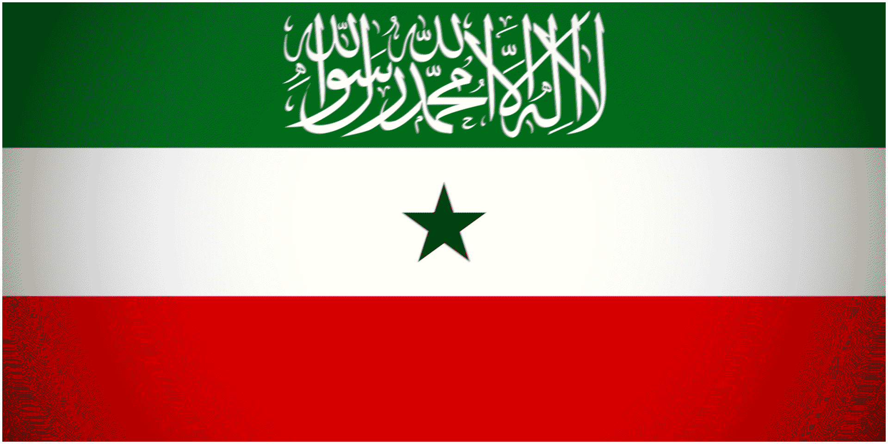
.Fig 1. FANO MILITANTS IN AMHARA STATE GRADUATING A TRAINING COURSE. ONCE ALLIES OF ADDIS ABABA, THEY NOW ALIGN THEMSELVES WITH THE TPLF, SUDAN, AND ERITREA c. 2026
So will war actually happen? Will both sides plunge the region into the greatest calamity in the region ever? It's probable, even likely, but one key point has pushed against the notion. For one, the wider regional war. Since February 28, 2026, the Trump administration in America  and the Netanyahu government in Israel
and the Netanyahu government in Israel  have waged a terribly ineffective and disastrous war against the regime in Iran
have waged a terribly ineffective and disastrous war against the regime in Iran  . Five months later, the strategically invaluable straits of Hormuz are still closed and regime change is nowhere close. Anyway, what is the point? The horn of Africa is one of the most vulnerable regions to this crisis. Due to their geography, Iranian-backed
. Five months later, the strategically invaluable straits of Hormuz are still closed and regime change is nowhere close. Anyway, what is the point? The horn of Africa is one of the most vulnerable regions to this crisis. Due to their geography, Iranian-backed  Houthi
Houthi  activities in the Red Sea would plunge the region into a major economic cataclysm. So both sides delayed plans and buildups ongoing in February for another date. Perhaps if they see the Iran war as low-level or a constant, the threat of war in the Horn may return in full force.
activities in the Red Sea would plunge the region into a major economic cataclysm. So both sides delayed plans and buildups ongoing in February for another date. Perhaps if they see the Iran war as low-level or a constant, the threat of war in the Horn may return in full force.
The next section of the article will be focused on Tiktoks made by ENDF soldiers, with a sample size of around 21 accounts. Why is this important? Well I hypothesize that using the amount of Tiktoks created in a month, you can determine the scale and intensity of a military buildup. Any “Tiktok” edits will be disregarded on the basis that they may be old. All videos that depict anything other than weapons and the vehicles of war will also be disregarded.
Of those 21, I have sorted through the six of the most interesting accounts.
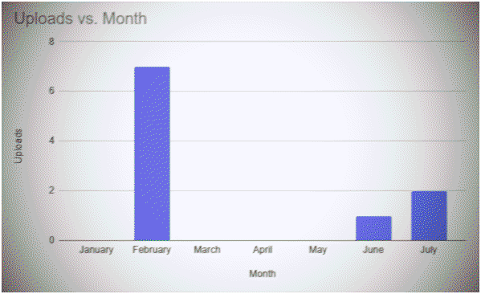
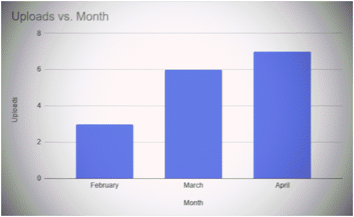
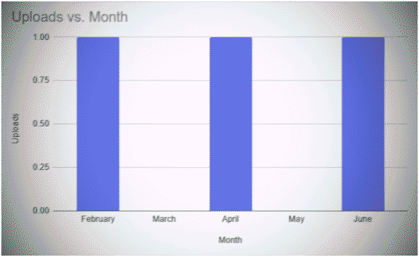
This marks appropriate videos for users @lammii.boggaallaa, @tayer5626, and @ss52ab (from the top down). The top and bottom graphs corroborate my claim of more videos. Both accounts show them moving to northern style mountainous terrains in February, then petering off in March. Meanwhile, the middle user appears to be a tanker in the savannah-like landscape in southern Ethiopia . In that case, an increase would indeed make sense. He may also have been stationed in a part of Afar, as he recorded himself driving an AFV down a road with the caption “Toward Asab” (as in the Eritrean port).
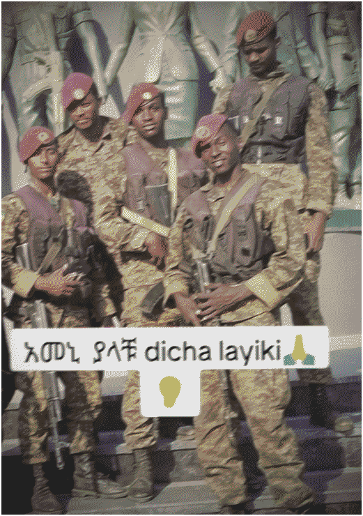
Fig 2. USER @saron7558 IN HIS DEPLOYMENT TO THE GERD DAM DURING THE HEIGHT OF TENSIONS IN FEB.
In two other accounts @saron7558 and @suraja063, the soldiers depicted their deployment in areas of northern Ethiopia near Tigray . The former in particular was sent to the GERD dam in February of 2026, a highly geopolitically sensitive piece of infrastructure on the Sudanese  border that is hated by Egypt
border that is hated by Egypt  , as it allows for the restriction of the Nile’s water supply. As a result, Egypt
, as it allows for the restriction of the Nile’s water supply. As a result, Egypt  has become one of Ethiopia’s greatest enemies. They have backed both Eritrea and the SAF
has become one of Ethiopia’s greatest enemies. They have backed both Eritrea and the SAF  against Ethiopia and its proxies. In a total war scenario, the GERD dam would definitely be a target for enemy forces. The reason why they are not included in their graphs is because their activity mostly ceases after February. One of the two may have actually been discharged or demobilized by mid-March.
against Ethiopia and its proxies. In a total war scenario, the GERD dam would definitely be a target for enemy forces. The reason why they are not included in their graphs is because their activity mostly ceases after February. One of the two may have actually been discharged or demobilized by mid-March.
Using this data, we can extract that indeed the ENDF was preparing for a war against the TPLF and Eritrea during the month of February from the volume of content posted that month. However, after America’s war  against Iran
against Iran  and its obvious consequences for the oil market, the ENDF pulled back from the Tigrayan front and instead focused on beating back the Fano militias, who had gained major ground during the standoff. With the unpredictability of the situation in the straits, Ethiopia announced an extension for the Tigray Interim Administration, their official post-first war government in the Tigray region. The decision was seen as an aversion or delay of any war initiated by the ENDF . After that, bellicose Tiktoks declined, though in July, they have slightly bounced back following the TPLF’s aggressive policy of forced recruitment.
and its obvious consequences for the oil market, the ENDF pulled back from the Tigrayan front and instead focused on beating back the Fano militias, who had gained major ground during the standoff. With the unpredictability of the situation in the straits, Ethiopia announced an extension for the Tigray Interim Administration, their official post-first war government in the Tigray region. The decision was seen as an aversion or delay of any war initiated by the ENDF . After that, bellicose Tiktoks declined, though in July, they have slightly bounced back following the TPLF’s aggressive policy of forced recruitment.
As mentioned previously, the UAE has been a major ally and assistant to the ENDF , sending weapons and vehicles. Fortunately for us, this is something we can record and quantify using FlightRadar24, a handy tool for open source research. Unfortunately though, for whatever reason, FlightRadar24 has a exorbitant paywall and requires a monthly subscription. For this reason, I will be creating data from the screenshots and posts from the account @AfriMEOSINT. The month of July only extends to the 21st in terms of data.
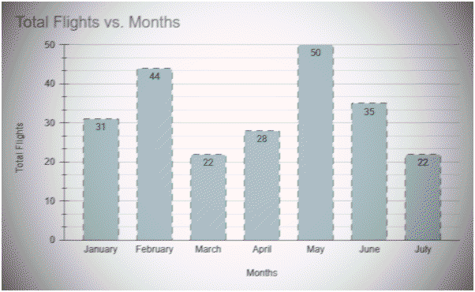
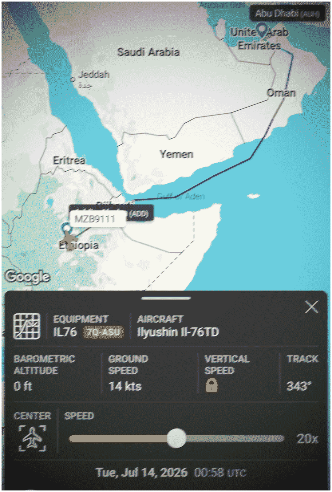
Fig 3. EXAMPLE OF A FLIGHT BETWEEN ETHIOPIA AND THE UAE COURTESY OF @AfriMEOSINT c. JULY OF 2026
The graph depicts the number of flights between airbases/airports in Ethiopia and the UAE using cargo aircraft, most often the Ilyushin-76, per month. So what does this tell us? We can see the dramatic increase in Emirati shipments during the month of February in preparation of an ENDF offensive on Tigray /Eritrea . However, that peak drops off a cliff when the US and Israel  begin to bomb Iran
begin to bomb Iran  , resulting in the latter bombing the during the month of March. This bleeds into the month of April slightly, when both sides agreed to the Islamabad Moratorium of Understanding on the seventh. Despite the hot phase of Operation Epic Fury, the UAE continued to send MRAPs and other weapons. The month of May was the quietest so far in the Iran war, so it made sense that transfers would nearly double. However, because of continuing and even worsening tensions over the strait of Hormuz and the growing prospect of the return of war, the UAE seems to have slowed down shipments to Ethiopia . Considering the current trajectory of the war, shipments to Ethiopia may become even more limited.
, resulting in the latter bombing the during the month of March. This bleeds into the month of April slightly, when both sides agreed to the Islamabad Moratorium of Understanding on the seventh. Despite the hot phase of Operation Epic Fury, the UAE continued to send MRAPs and other weapons. The month of May was the quietest so far in the Iran war, so it made sense that transfers would nearly double. However, because of continuing and even worsening tensions over the strait of Hormuz and the growing prospect of the return of war, the UAE seems to have slowed down shipments to Ethiopia . Considering the current trajectory of the war, shipments to Ethiopia may become even more limited.
• https://www.cfr.org/global-conflict-tracker/conflict/conflict-ethiopia
• https://www.aljazeera.com/news/2022/11/10/two-years-of-ethiopias-tigray-conflict-a-timeline